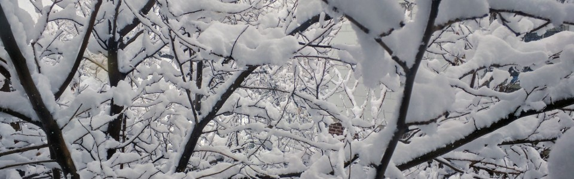
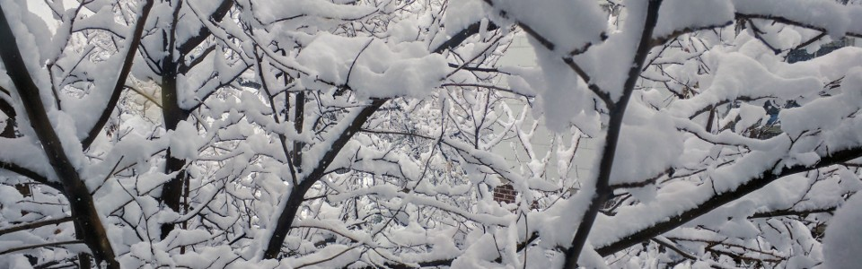

Bouldering
When I moved to Lausanne to start my first postdoc, I had the fortune to meet Maria Dostert, Maciek Zdanowicz, and Klaus Müller (Maria's boyfriend) who soon after took me to the local bouldering gym Le Cube changing my life forever. Despite of my initial hesitation to go climbing, I've been loving bouldering ever since and I'm pretty passionate about it (not as much as Klaus is though).
Klaus runs this YouTube channel where you can watch some of my bouldering adventures with him, Maria, and Maciek.
Here you can watch my best climb so far, which I sent in September of 2020. Some months later I dislocated my shoulder trying the most beautiful dyno you can imagine. Ever since, I've been trying my best to get back in shape amid the pandemia (work in progress).
Some other agers I've have the pleasure to climb with include: Takehiko Yasuda, Fabio Bernasconi, Takumi Murayama, and Daniel Smolkin. Feel free to ask any of them for a bouldering rec. letter.